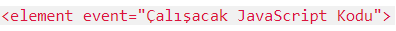
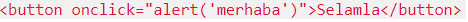
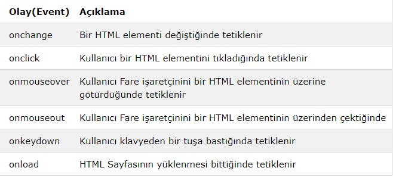

Bir butonun tıklandığında olanlar, fare imlecini bir nesnenin üzerine götürdüğünüzde ve benzeri olanlar olay olarak adlandırılır.
HTML'de pek çok olay mevcuttur.
Bir HTML olayı, tarayıcının ya da kullanıcının yaptığı harekettir.
•HTML sayfasının yüklenmesinin bitmesi bir olaydır.
•Kullanıcının bir HTML textbox yani metin kutusuna bir şeyler girmesi bir olaydır.
•Bir HTML butonun tıklanması bir olaydır.
JavaScript bu olayları denetler ve biz istediğimizde bu olayın ardından yazdığımız JavaScript kodunu çalıştırır.
Herhangi bir HTML elementinin olayını yakalamak için şu söz dizimini kullanırız:
Örneğin bir buton tıklandığında ekrana merhaba mesajı gelsin istiyorsak:

kodunu kullanabiliriz.
Uyarı: Kodu incelemek için örneği incele dedikten sonra CTRL+U tuşuna basınız
Yukarıdaki örnekte buton tıklandığında ekran bir merhaba yazan bir mesaj kutusu gelir.
Aşağıdaki örnekte JavaScript ile bir elementin zemin rengini değiştiriyoruz:
örneği inceleUyarı: Kodu incelemek için örneği incele dedikten sonra CTRL+U tuşuna basınız
Yukarıdaki örnekte buton tıklandığında ekran bir merhaba yazan bir mesaj kutusu gelir.
***Aşağıda yaygın olarak kullanılan HTML olaylarını bulabilirsiniz:
***Olay işleyiciler (event handlers) ile kullanıcıdan alınan veriler işlenebilir, konrol edilebilir, yönetilebilir ve tarayıcı hareketleri kontrol edilebilir
•HTML sayfası yüklendiğinde yapılması istenilenler JavaScript ile yapılabilir.
•HTML sayfası kapatıldığında yapılması istenilenler JavaScript ile yapılabilir.
•Bir buton tıklandığında yapılması istenilenler JavaScript ile yapılabilir.
•Ve çok daha fazlası.
***JavaScript içindeki pek çok metod ile HTML elementleri üzerinde işlem yapabilirsiniz.
•HTML elemenlerinin öznitelikleri JavaScript ile dinamik olarak değiştirilebilir.
•HTML elementlerinin olayları JavaScript ile yönetilebilir.
•JavaScript ile yapamayacağınız şey yok gibidir.
JavaScript çok güçlü bir dildir. Oyun da dahil olmak üzere pek çok uygulama yazılabilir.